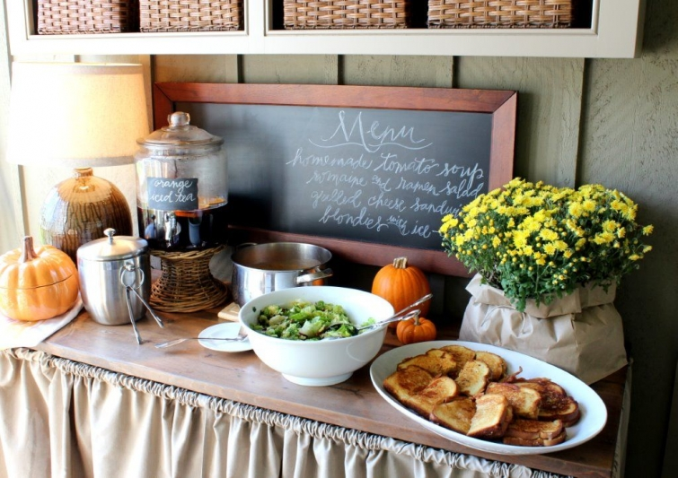
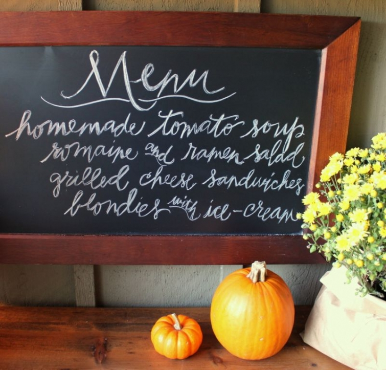

.png)
.PNG)
.PNG)
.PNG)
.PNG)
.PNG)
.JPG)
.JPG)
.PNG)
.PNG)


I hope your weekend has been a good one. The weather has been so pretty here (but actually a little chilly!) I mentioned the other day in the Halloween post that I was not going to do my Halloween dinner because the weather was so warm. Instead, I decided to save it for this fall-like weekend. So I am sharing it here with you – along with a game plan of how to create it. (Some of this is “live and learn” that I will do the next time I make this meal.)
Here was the menu:

Not my best lettering since I was in the middle of preparing the sandwiches when I remembered the chalkboard still read Happy Halloween. 🙁 So step one in the game plan would be to do a chalkboard menu the day ahead. (See, I told you this was “live and learn.” :))
I would also make the blondies a day ahead. The recipe I used was a very good one…Ina Garten’s Chocolate Chunk Blondies. The recipe is available here, and it is in her book, Foolproof.
Barefoot Contessa Foolproof: Recipes You Can Trust
I could not find the chocolate chunks that her recipe called for so I used half the amount in chocolate morsels and the other half in M&M’s (in the autumn color mix.) Here is the colorful batter all ready for the oven.

And here is the delicious dessert after baking.
If your dessert is made a day ahead, the plan for the day of this meal would be to first set your table…
Then prepare the tomato soup. Again, I used a recipe from Ina Garten’s Foolproof cookbook, “Easy Tomato Soup and Grilled Cheese Croutons.” The recipe for it is available here. I substituted rice for the orzo in the recipe this time, but the next time I make it I am going to make 4 changes.
1. Leave out the rice or the orzo completely.
2. Leave out the salt. (It had plenty from the stock.)
3. Leave out the saffron. I thought it masked the flavor of the tomatoes, and I love the flavor of tomatoes…so why mask it?
4. Add a little chopped fresh basil as a garnish…basil compliments the flavor of tomatoes.
(This was the soup early on…before rice and cream were added.)
The next part of the game plan for this lunch is to make the salad. This is absolutely my favorite salad and my daughter’s favorite. I got the recipe from my friend Robin, who also gave me the recipe for the potato soup that is so delicious. This salad is a winner.
Hold off on adding the dressing until you are ready to serve the salad. After making it, prepare the grilled cheese sandwiches. I did not use the recipe from the Foolproof book for these. Instead, I used her Ultimate Grilled Cheese recipe from the How Easy is That? cookbook. Adding the bacon to these sandwiches is what really makes them good.
Barefoot Contessa, How Easy Is That?: Fabulous Recipes & Easy Tips
The recipe for it is also here. Or you can watch Ina actually prepare the sandwiches in a video segment from her show.
The sandwiches are the last thing to make for the meal. So when they are finished, you are ready to put it all on the table for serving.
The buffet is ready.
The table is ready.
Everyone can serve themselves from the buffet.
And after enjoying the soup, salad, and sandwiches, dessert is easy-peasy with the super rich blondies and ice-cream.
This will be the game plan next time. Today I had not prepared anything ahead of time, so my sons helped out in the kitchen with everything. (Thanks, boys!) Or better yet, maybe next time they’ll prepare it all. 🙂 It really was a good meal to enjoy on a brisk fall day. I hope you will get to try out some of the recipes – especially that yummy salad.
until next time…


.PNG)
Ok – I want to carbon copy this EXACT meal and not change a thing. Delish!!! Maybe this weekend 🙂 I have the foolproof cookbook on my Christmas list too.
———————————————————————
It’s a good one, and your boys would like it too. The Foolproof book is full of great recipes. Hope you get it for Christmas!
Kelly
Hi, just wanted to stop by with a greeting and catch up on this post that I somehow missed. I see where you are doing better with some new meds, let’s hope you are on the right track because it is getting to be that busy time of year…! Glad the weather’s been good, that does cheer the spirit. Loooove the pumpkin soup bowls, they are so sweet. You know, I (who bake all the time) never have great luck with blondies, I find they look perfect right out of the oven and then harden terribly before cutting. Yours look so yummy with the M and M’s and ice cream, maybe the secret is using a glass pan? On a grilled cheese note: my friend had made a wonderful massaged kale salad and the next day put some of the leftover salad into her grilled cheese sandwiches, heavenly! So, I say, bring on the bacon and anything else you’d like in that sandwich. Hope you have some fun weekend plans, eagerly awaiting your next post.
———————————————————————–
Hi Paula! The secret to blondies is undercooking them. Take them out before they are done in the middle, and they will work great. Also, if they are too hard, you can always microwave them (on a plate of course – not your metal pan.:)) The salad in the grilled cheese sounds good- yes, sandwiches can take anything you want to throw in them for some zing. And that bacon certainly added a nice punch of flavor to ours. Our weekend is busy with trying to get our yard in shape…but at least the weather is beautiful for it. Enjoy your weekend!
Kelly
Kelly,
I love grilled cheese sandwiches and Mr. B. loves tomato soup, so we usually pair the two. I love the way you set out the food, so inviting and mouthwatering. I’ve never fixed Ina’s Blondies…I like the idea of fixing them with M&Ms. So nice.
Karen
———————————————————————–
You would love the grilled cheese sandwiches from Ina’s recipe. They were VERY good. And those blondies didn’t last long! (But none of us are very good about resisting anything chocolate.)
Hope you have a great weekend!
Kelly
I love all of the lettering that you do. So beautiful and creative. I plan on making creative lettering a winter project! When you letter on chalkboards what kind of chalk do you use? Do you ever use chalk pens?
———————————————————————-
Thank you Ashley! I have no idea what kind of chalk is in the zip lock bag I keep of accumulated chalk pieces…so that means that I don’t really have a personal preference. To me, the surface you are writing on makes more of a difference than the chalk. In fact, I was working on a project this week that was advertised as “chalk tags.” They were not just black card stock, and they were very difficult to write on with chalk (and I did try several different brands of chalk to see if that was the problem.) I think the makers probably thought people would use the chalk pens on them. I have a post I wrote on my chalk lettering. It is here if you would like to take a look at it: http://www.talkofthehouse.com/lettering-part-2-chalkboard-tutorial/ (Part 1 is on lettering with calligraphy pens.)
Hope this helps!
Kelly
Hi Kelly. Your Fall meal looks delicious and your table looks lovely. My husband, who is chef these days, has been looking for some good soup recipes. I will definitely have him try this. I, on the other hand, always love a good salad and dressing recipe. I make a similar dressing with honey, mustard, balsamic and oil and it is so good. Thanks so much for sharing.
K.
———————————————————————-
So glad you liked the food in the post Kristi! Your dressing sounds delicious. Hope you have a great weekend!
Kelly
Oh I love that salad too! I use almonds instead of pecans, and add a couple diced red apples and red onion sometimes. The dressing is so delicious I’ve even used it for other salads too. I’m sure that meal was delicious!
———————————————————————-
I will have to try your other ingredients. They sound great! And yes, that dressing (so full of sugar :)) is really delicious!
Thanks for the suggestions, Marianne.
Kelly
I would have loved to sit at that beautiful table and enjoy this menu! And thank you for sharing the recipe sources. I must give your salad recipe a try especially.
———————————————————————-
Aw, that is sweet of you to say that, Barbara. Do give that salad recipe a try. I think I am going to have some of the leftover salad for dinner right now! (along with our chili tonight.)
Kelly
I just love it all! Looking at your pictures always gives me inspirition, and I am slowly getting my fall things in place in beytween all the other things that need doing on the weekends! So far I have madee a new fall wreath for our condo door, put out my fall-scented candles and spruced up several silk flower arrangments in the living room and dining room. I am also hanging my “fall” curtains on the slider to the porch when I get home from work today: black and ivory homespun-looking gingham curtains similar to the ones you have.(are yours green and white?) I loved the menu but wondered – how do you keep your sandwiches hot as you are making them all? Do you have a warming block in their basket? It is all so yummy looking! Thanks so much for sharing!
———————————————————————
You have been quite busy, Chris! I need to get some things done around here beyond the “Halloween stage.” Our drapes are black and white in the dining room and kitchen. For keeping the sandwiches hot, our oven has a “warm” setting, so as I finish 2 sandwiches at a time, I put them on a baking sheet lined with parchment paper in the oven on “warm” until I finish making all of them. It works very well.
Kelly
Hi Kelly…what a perfect fall menu! I love everything about it!! Delicious!! Thanks for sharing!
———————————————————————
Glad you liked it Sandy! 🙂
Kelly
Love the menu– have never made homemade tomato soup! Getting ready to make grilled cheese with mozzarella and pepperoni slices/Italian seasoning and dipped in warmed pizza sauce. Must be grilled cheese weather! I have made the salad and it is wonderful. Thank you for the step by step directions and tips! I just finished writing my Thanksgiving menu on my chalk board– thought of you! Posted it on my FB and now my followers are wanting to make reservations! 🙂
———————————————————————-
It definitely must be grilled cheese weather, Louvina! Yours sound great with the pizza like toppings. I can’t believe you are already getting things ready for Thanksgiving. I wish I was that ahead of schedule. Jealous here!
Kelly
You’re making my mouth water again! I love that you can have a November Fall Lunch on your porch. It’s too chilly here in Ohio! The salad sounds very intriguing. I may have to try that one. And bacon on a grilled cheese? YUM! My boys would love that. We love adding extras to our grilled cheese….sauteed mushrooms, Summer tomatoes. Thanks for sharing your lunch with us!
———————————————————————-
It can be chilly on that porch in November, but it has also been warm enough some years to have Thanksgiving lunch out there. And it has been used for a number of Christmas parties in December. Our weather is never cold for very long. The bacon on that sandwich was very good. I have never thought of putting sauteed mushrooms on them, but that is a great idea! And yes, I love them with the summer tomatoes. Thanks for your comments, Jill!
Kelly
Really like your Fall table! I do like Ina Garten’s recipes, so I will have to try these for sure. Do you think the salad can be made without the nuts and maybe substitute with peanuts. I made some chili and biscuits today as we received a heavy snow fall!
——————————————————————–
Anita, I don’t see why you couldn’t substitute any nut for the pecans. Peanuts would be fine, and I think I would actually like walnuts, too. Snow?! Oh I would LOVE to see that. I just put ingredients for chili out on my kitchen counter for dinner tonight. Great minds think alike 🙂 (but we have a high here today in the sixties.) Enjoy the white stuff for me!
Kelly
I’ve never thought of putting bacon on a grilled cheese! What a marvelous idea! The blondies and ice cream look scrumptious! Thanks for a dinner idea! Hope you are feeling better this week! 🙂
———————————————————————
Jayne, the bacon really added a lot of flavor to the sandwiches. If you make the blondies, eat them warm with the ice cream. Yummy! I have been doing better since I started on a combination of medicines. Thank you for the “feel better” wishes.
Have a great week!
Kelly
This all sounds sooooooooooooooo good. Thanks for the recipes. Hugs, marty
———————————————————————
It was a good meal. Hope you will try out some of the recipes soon, Marty.
Kelly
Tomato soup and grilled cheese sandwiches have been a long-time favorite! And I only used canned soup and processed cheese slices. I can’t wait to try your recipes, plus the salad! And I do covet the pumpkin bowls…
Thanks, Kelly!
———————————————————————–
I had only used the canned soup before, Ann. Now I did use real grated sharp cheddar, but my daughter always preferred the sandwiches with the processed cheese slices. (She is also a big fan of bologna, salami, and other such “gourmet” treats. LOL) So making these from scratch was quite a treat. Our son fussed at all of us today for not dunking our sandwiches in the soup! Here’s hoping you will find a set of the pumpkin bowls at a yard sale or outlet.
Kelly
This lunch sounds delicious. I love watching The Barefoot Contessa. I need to purchase her cook books . What fun having your sons helping you in the kitchen. The salad sounds fabulous, love a good salad.
———————————————————————
Yarlette, if you are a salad eater, do try that salad recipe. I first had it at a Christmas party and just HAD to get the recipe. I know it sounds strange with the Ramen noodles in it, but they add a wonderful crunch to it.
Kelly
Thanks for sharing! I loved all the details that you included. Sounds like a very yummy and do-able menu. I also love Ina Garten!
———————————————————————-
I’m so glad you liked it all, Lonna. It was very do-able (with the last minute help of my sons.) Ina Garten’s recipes are always delicious, aren’t they?
Kelly
Kelly,
This Fall lunch looks wonderful. I am sure your family enjoyed the comfort foods and company. Thanks for sharing the recipes with us! I can’t wait to try those blondies out.
———————————————————————-
The blondies were VERY rich. I had not had any in years…can’t believe I forgot how good they were! You definitely should make some.
Kelly